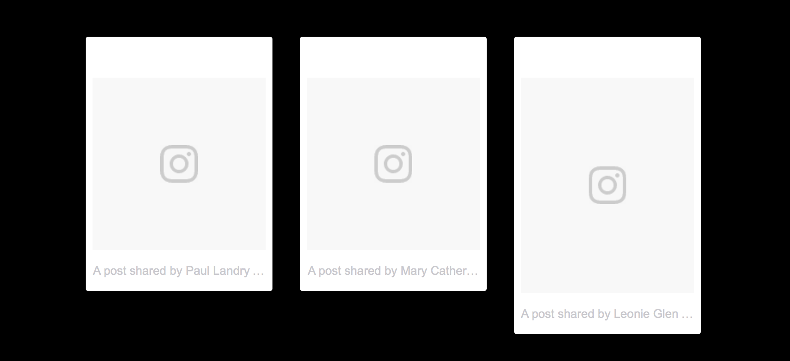
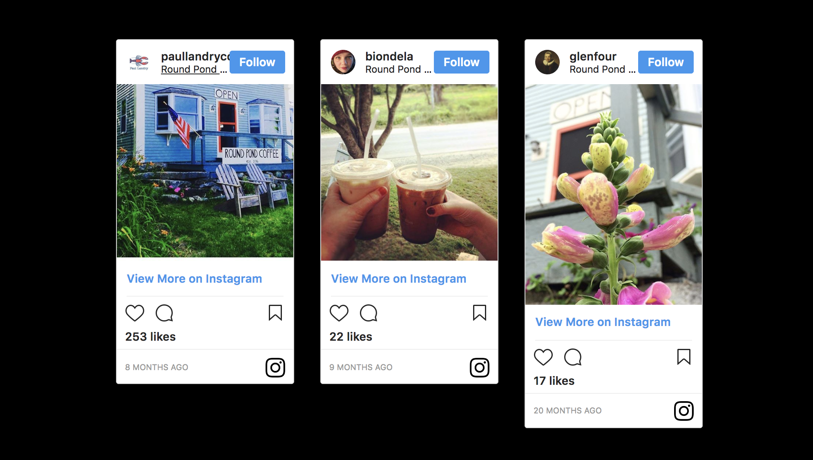

Roadblock
I chose to embed Instagram posts geotagged to the store to show off their existing digital presence and give the website a personal touch.
While testing across all the major browsers, I found an issue. Despite the images appearing on all other major browsers, the photos would not display on Safari.
Safari Before the Fix
I looked through Stack Overflow and found other developers with the same issue. Through a combination of the advice on the forum and my own digging, I discovered the issue.
The images failed to load because Instagram’s generated Javascript tags do not include a hypertext transfer protocol (HTTP). This causes links to be unstable across different browsers. By adding the protocol, I fixed the issue for all browsers.
